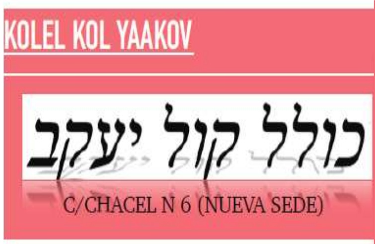
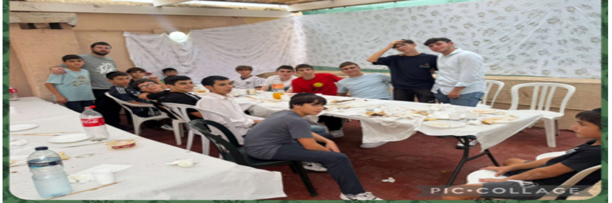

En la Parashit Bereishit, surge una pregunta bien conocida: ¿Por qué la Torá comienza con la frase: "Al principio, Dios creó el cielo y la tierra"? A primera vista, habría sido más apropiado decir: "Dios creó al principio", para dejar claro que es Hashem, quien es Dios, quien es el que creó los cielos y la tierra. De lo contrario, uno podría creer erróneamente que existe una entidad independiente llamada "Bereishit". Los libros sagrados dan cada uno una explicación según su enfoque, pero pensamos, con la ayuda del Cielo, que aquí hay una base esencial que traza un camino para cada judío.
¡La Torá comienza diciendo "Bereishit" (¡Al principio)! ¿Sabes cuál es el primer elemento que necesitas integrar? Un judío que quiera entender su papel en este mundo debe saber, ante todo, que "Dios creó el cielo y la tierra." La Torá nos muestra un camino, cómo vivir, cómo actuar con certeza. Y lo primero que nos enseña la Torá es que el judío debe interiorizar desde el principio que Hashem creó el cielo y la tierra, solo él, y que toda la creación le pertenece. Es Él quien dirige, supervisa, en cada momento. Él fue, Él es y lo será. Él es responsable de todo lo que sucede en el mundo, todo viene de Él y todo se hace por Su Providencia.
Así es como comienzan los Diez Mandamientos: "Yo soy el Señor tu Dios" (Shemot 20:2). Este es el fundamento de toda la Torá, y por eso la Torá se transmitió al pueblo de Israel. Hashem dijo: "Yo soy el Señor vuestro Dios, que habéis actuado y moldeado, soy el que da vida a toda la creación." Esta fe debe impregnar a cada judío: todo se basa en la convicción de que Dios creó el cielo y la tierra, y que todo lo que ocurre en el mundo proviene exclusivamente de Él, incluso en los detalles más pequeños. Incluso lo que el hombre cree que es culpa de uno u otro, la Santa Torá dice: ¡no! No existe otra fuerza en el mundo. Solo Dios actúa, crea, y todo emana de Él.
Hay una conocida Guemará (Shabat 105) que dice: "Quien rompe objetos en su ira – es decir, en un ataque de ira, destruye objetos y no se controla – es considerado idólatra." ¿Cuál es la relación entre quien está enfadado y quien sirve a los ídolos? ¿No habría sido suficiente decir que la persona que se enfada es alguien inestable, quizá incluso un tonto, o incluso una persona desequilibrada? Pero, ¿cómo es que nuestros santos sabios, bendita sea su memoria, han llegado a vincular la ira con la idolatría, cuyo significado es tomar un ídolo, inclinarse ante él y decir: "He aquí a tu dios, oh Israel"? Un hombre enfadado es, en última instancia, alguien que no controla su mente. Quizá sería más apropiado llamarle loco o loco... ¿Pero qué tiene que ver esto con la idolatría?
La explicación es sencilla: ¿cómo reacciona una persona cuando es agraviada? Si se enfada inmediatamente y exclama: "¿Qué has hecho? ¡Me has hecho daño, me has hecho daño! » ; de su boca sale la idea de que es el otro quien la ha hecho daño, y que es por su culpa que ha perdido algo. Pero esto es una forma de negación de la fe, ¡Dios no lo quiera! ¿Crees que fue la otra persona quien te hizo esto? Todo se decide desde arriba, todo ha sido decretado desde Rosh Hashaná, desde el nacimiento del hombre. Fue Dios quien ordenó que tal o cual evento ocurriera. No es ni el otro ni el vecino. Ninguna criatura en el mundo puede dañar ni hacer bien a nadie a menos que haya sido decretado por Hashem. Así, quien tiene fe y confianza en Dios no necesita acudir al Beth Din, ni tampoco apelar a las leyes de Choshen Mishpat. Depende por completo de Hashem, convencido de que todo será decidido por Él. Todo está dirigido por Su Providencia especial, y todo emana de Él.
Esto es exactamente lo que hizo el rey David, cuando ordenó a sus sirvientes que no hicieran daño a Shimi ben Gera, quien le había insultado con maldiciones violentas: le llamó bastardo, le acusó de adulterio y le lanzó otros insultos duros. El rey David pidió a sus hombres que le dejaran en paz, que no le hicieran nada, pues sabía que en realidad no era Shimi ben Gera quien hablaba, sino que venía de arriba y que merecía lo que estaba pasando. Por eso dijo: "Hashem sabe que necesito pasar por este dolor, esta humillación, y debo aceptarlo con amor." Así que no había nada que reprochar a Chimi ben Guéra: ¿fue él quien creó esta situación? ¿Fue él quien me maldijo? No, todo viene de Hashem. Déjalo, porque tuve que soportar esta humillación, y la acepto con amor. Así es como se comporta un judío creyente, que sabe que todo viene de Hashem y que vive en presencia del Creador. Vivir así es reconocer que no existe tal cosa como la casualidad en el mundo, que nadie más actúa y que nadie tiene poder salvo Hashem.
La Guemará en el Tratado Baba Batra enseña que: "Quien aparta la mirada de Tzedacá debe ser considerado como si estuviera practicando la idolatría." De nuevo, es sorprendente, ¿qué tiene que ver negarse a dar Tzedaká con la idolatría? La explicación es la siguiente. Una persona que guarda su dinero para sí misma, que no quiere dar nada ni cumplir la Mitzvá de Tzedakah, en realidad cree que el dinero le aporta bienestar, alegría y que le permite comer y vivir. ¡Pero esto también es una forma de negación de la fe! ¿De verdad crees que el dinero es la fuente de tu alegría en la vida? ¡Dios no lo quiera! Es Hashem quien te da todo lo que tienes: alegría, salud, todo lo que el hombre necesita, todo viene solo del Creador del mundo, no del dinero, que no tiene poder.
A veces una persona puede poseer millones y, sin embargo, no ser feliz, como si no tuviera nada: por ejemplo, un dueño de pastelería que no puede comer sus propios pasteles por su salud. Lo tiene todo, pero Hashem ha decretado que no puede aprovecharse de ello. ¿De qué le sirve? El verdadero placer solo viene de Hashem, y solo Él puede hacer el bien al hombre, nadie más. Una persona que vive según esta perspectiva está unida a Hashem, y sabe que Él es quien obra en todas las cosas.
En la época del rabino Yitzchak Elchanan de Kovno, la policía y el ejército rusos reclutaron a muchos niños. Fue una situación terrible y angustiosa. Cualquiera que estuviera alistado sabía de antemano que tendría que servir durante muchos años y, desafortunadamente, muchos regresaron de allí completamente asimilados, habiendo abandonado su identidad judía. En el ejército, estaban aislados de sus familias, de la religión y se les prohibía llevar cualquier signo de judaísmo. Se dice que un joven recibió una citación oficial del ejército, ordenándole presentarse en una fecha concreta. ¡Fue un decreto terrible! Los padres estaban muy preocupados y el propio niño no sabía qué depararía el futuro. Marcharse al ejército tan joven, sin saber si volvería antes de los treinta o cuarenta, o incluso si volvería algún día...
La familia se preguntaba qué hacer y consultó a toda la gente que pudo. Un día, el padre conoció a un amigo que le dijo: "Para cada problema, hay una solución. Si no quieres que tu hijo sea reclutado, hay hombres influyentes con muchas conexiones que saben cómo actuar entre bastidores. Pueden hacer mucho para conseguir una exención del servicio. Sin embargo, estas personas no trabajan gratis: piden dinero y actúan en las sombras, pero en general, tienen éxito." Aliviado, el padre buscó entonces a alguien que pudiera ponerle en contacto con esas personas. Le aconsejaron que fuera a Kovno, donde estaba destinado el Gaón de los Geonim, el rabino Yitzchak Elchanan, que conocía a muchos jasidim y personas influyentes que trabajaban discretamente. Sin duda sabría a dónde acudir y cómo proceder para que el chico quedara exento del servicio militar.
El padre se llevó consigo una suma muy grande de dinero y se fue a Kovno con su hijo. Cuando llegaron, contó toda la historia al Rav: "Quieren alistar a mi hijo pequeño en el ejército ruso y ha recibido una convocatoria por unas semanas. No quiero, Dios no lo quiera, que su pie pise este lugar, ¿quién sabe qué le pasará allí? Le dio al Rav quinientos rublos (una suma considerable en ese momento) y le suplicó que usara sus conocimientos para hacer lo necesario. El rabino Yitzchak Eljanan tomó el dinero y respondió: "Con la ayuda de Dios, me aseguraré de que no sea reclutado." Padre e hijo regresaron a casa felices y confiados, porque ¿quién mejor que el rabino Yitzchak Elchanan conocía el funcionamiento del mundo? Estaban seguros de que haría lo correcto con lealtad y eficiencia.
Llegó el día designado para la convocatoria. El joven se presentó ante los oficiales del ejército. Apenas había pasado por la puerta cuando un alto rango le llamó: "¿Eres Shmuel?" El chico, asombrado, respondió que sí, preguntándose cómo lo conocía ese hombre, si aún no había rellenado un formulario ni mostrado sus papeles. El agente continuó: "Parece que sufrió una enfermedad hace unos años, y que ha tenido varios problemas médicos desde entonces. Dada tu frágil y complicada situación de salud, creo que lo mejor es que te eximas del servicio. No queremos complicaciones contigo durante tu periodo militar". Le entregó el certificado de exención y lo envió inmediatamente a casa en paz.
El chico no podía creerlo. En pocos minutos salió libre y exento, y volvió a casa, todo alegre. Le contó a su padre todo lo que había pasado, y todos gritaron: "¡R. Yitzchak Elchanan es un gran hombre de influencia! Probablemente conoce a las personas adecuadas, a las que actúan discretamente, y sin duda ha movilizado a los mejores. Es evidente que el dinero fue bien servido, y la prueba de ello es que, incluso antes de que el chico entregara sus papeles, el oficial lo llamó por su nombre y, bajo varios y inexactos pretextos, le concedió la exención."
Muy conmovido, y a pesar de la distancia de un día de viaje que le separaba de la ciudad del Rav, el padre decidió ir personalmente a agradecer al Rav Yitzchak Elchanan. Se llevó a su hijo con él y, cuando llegó a Kovno, fue al Rav y le dijo: "He hecho un largo viaje de todo un día solo para expresarte mi gratitud, por la salvación de mi hijo y por la extraordinaria obra que has realizado. Has manejado este asunto con todos los hombres influyentes de la manera más profesional. Te estoy profundamente agradecido. Bendito sea el Nombre de Dios: gracias a ti, mi hijo fue liberado del servicio militar, y esto nos quitó un gran peso de encima."
El Rav respondió: "Permíteme decirte la verdad, querido judío. El mismo día que me diste el dinero, una joven huérfana vino a mi casa; Me dijo que se iba a casar en unos días, pero que no tenía ni un céntimo en el bolsillo para empezar su vida. Cuando vi a este huérfano, sentí un dolor tan profundo que no pude permanecer insensible. Tras solo unos momentos de reflexión, decidí en mi corazón dar todo tu dinero a este huérfano. A través de esta Mitzvá, estaba convencida de que el Creador realizaría un milagro para ti, y que tu hijo sería salvado del servicio militar."
Al oír esto, el padre se sonrojó de rabia, abrió la boca y dijo: "¿Qué? ¡Esto es lo que hizo el Rav! ¿Dónde está tu responsabilidad? ¡Te di este dinero para contratar hombres influyentes! ¡Imagina que al final el comandante no le exime del servicio militar, es una total falta de responsabilidad! ¡No te lo perdonaré! ¿Con qué autoridad podrías tomar mi dinero para cumplir otra Mitzvá? Y así sucesivamente, continuó pronunciando reproches, insultos y acusaciones.
El Rav, atónito, permaneció en silencio y escuchó sus palabras. Cuando el padre terminó, respondió: "¿Crees que estoy libre de responsabilidad? Debes saber que he actuado con la máxima responsabilidad en este caso. He dado tu dinero al mejor sitio posible. Cuando confié la suma a esta pobre huérfana para su matrimonio, en realidad di tu dinero al hombre más competente y influyente, aquel que sabe hacer este trabajo, y es Él quien ha actuado por ti y ha cumplido esta tarea. Al contrario, si no lo hubiera hecho, habría demostrado que soy irresponsable y culpable. ¡Avergonzaos! ¿Cómo te atreves a decir que soy irresponsable? Tu dinero fue a la mejor causa posible, y quien actuó en tu nombre fue el propio Hashem. Así, sin que siquiera lo conozcan, tu hijo ha merecido una providencia especial desde lo alto. Todos los hombres influyentes que podría haber contratado nunca habrían conseguido tal resultado."
El Rav concluye diciendo: "Debes fortalecerte en la fe. Toma el libro Chovot Halevavot y estudia el capítulo sobre confiar en Dios (Sha'ar Habitahon), para que puedas fortalecer tu fe y creer que Hashem es quien hace todo y lo hace todo." Esta es la lección que nos enseña nuestra santa Torá, que todo hombre debe primero tener fe en que Dios creó el cielo y la tierra, que Él es quien lo hizo, que actúa y que realizará todas las obras.
El rabino Nathan Neta Chapira, autor del Megale Amukot, fue el Gaón de los Geonim, un ángel del Señor. Un día, anunció a sus estudiantes y líderes comunitarios que quería abandonar su ciudad de Cracovia. Todos sus discípulos intentaron disuadirle, pero en vano. Parecía que tenía sus razones, quizá incluso secretos, pero nadie sabía por qué. La misma mañana de su partida, cambió de opinión de repente: permaneció en Cracovia. Este giro dejó a todos perplejos. ¿Por qué quería irse? ¿Y por qué había cambiado de opinión en el último momento? ¿En qué pensaba al principio y en qué pensaba al final?
Tras ser interrogado por sus alumnos, reveló la verdadera razón: "¿Sabes por qué cambié de opinión y decidí quedarme en Cracovia? Por un Din Torah (disputa rabínica) que me llegó a la mente. Escuchad de qué va todo esto: en nuestra ciudad vive un erudito de la Torá, un talmid jacham, que estudia con esmero y subsiste gracias a su esposa. Ella prepara panecillos todos los días — beiguels— y cada noche él sale a venderlos por unas pocas monedas, lo justo para sobrevivir.
Un día, un hombre rico lo vio y se dijo a sí mismo: "Aquí hay un talmid Chacham que se ha visto reducido a vender beiges todas las noches..." ¡Esto no es digno de la Torá! Y a veces ni siquiera vende nada y vuelve a casa sin dinero. Entonces el hombre rico se le acercó y le dijo: "No soporto verte así. Estoy dispuesto a pagarte una suma mucho mayor cada mes de lo que ganas con los beiguels. Pero con una condición: que abandones completamente esta actividad y te dediques únicamente al estudio de la Torá. Yo me encargaría de todas tus necesidades materiales. ¿Estás de acuerdo? ». Los Avrekh estuvieron de acuerdo. Llegaron a un acuerdo, y cada mes el hombre rico venía a darle la suma acordada.
Pasaron tres meses, y un día el hombre rico pasó por la calle y vio a ese mismo erudito sentado fuera con los beiguels (rollos) como antes. Se acercó y dijo: "Disculpe, ¿no firmó usted un contrato conmigo? ¿Cómo es esto posible? ¿No habíamos quedado en que te quedarías en el Beth Hamidrash para estudiar? ¿Por qué estás aquí vendiendo en la calle? ¿No entiendes que estás rompiendo nuestro compromiso? El erudito respondió simplemente: "He cambiado de opinión." El hombre rico se quedó atónito y respondió: "¡Hemos hecho un trato, no se retracta un contrato a la ligera!" Para aclarar la situación, decidieron ir a la casa de los Megale Amoukot. El Rebe escuchó las afirmaciones del rico de que había firmado un contrato con el erudito para pagarle una gran suma de dinero y así poder dedicarse al estudio de la Torá, y luego lo sorprendió vendiendo pan. Le pregunté al erudito: "¿Qué opinas de eso?" Él respondió: "Hasta el momento en que este hombre me vio, iba al mercado todos los días con mis panecillos sin saber qué iba a pasar. Todo este tiempo, miré a Hashem y le decía: "Tú eres quien alimenta, tú eres quien provee nuestras necesidades." Creo en Ti, te lo ruego, mándame clientes para que tengamos algo de comer. Así que sentí una conexión muy fuerte con Hashem. Pero desde el momento en que dejé los beiges y me senté en el Beit Hamidrash a cambio de esta pensión, me olvidé de Hashem."
El erudito añadió: "¡No quiero olvidar a Hashem! Por eso prefiero salir a la calle cada día a vender estos panes por unas pocas monedas, siempre que sienta esa conexión con el Creador, que sienta que es Él quien me alimenta y provee. Así es como espero alcanzar la fe perfecta." El Megaleh Amukot concluye sus palabras dirigiéndose a quienes le escuchaban: "Dado que ha habido un Din Torá como este en esta ciudad, y hay personas con una fe tan fuerte en Hashem, no abandonaré esta ciudad."
Rabino Avraham Attia
Con motivo de la Hilulá del rabino Yitzchak Abrabanel (1436-1508, también conocido como Don Abrabanel), que cae el día 10 de Av (o el 29 de Tishrei según algunos), aquí hay una lectura original de su comentario sobre la Torá, sobre un episodio muy conocido: la serpiente y el fruto prohibido. Contrariamente a la interpretación habitual, Abrabanel sostiene que la serpiente nunca habló. Su razonamiento es sencillo: si las serpientes hubieran tenido habla antes de ser privadas de ella, la Torá debería haber mencionado explícitamente un castigo tan significativo, ya que especifica que pierden las piernas. De manera similar, si Hashem hubiera concedido excepcionalmente la palabra a la serpiente, el texto lo habría indicado, como el burro de Bil'am cuya "boca se abrió". No aparece nada de eso aquí, lo que lleva a Abrabanel a concluir que la serpiente siempre ha permanecido en silencio.
¿Cómo podemos entonces entender la expresión "dice la serpiente" ("הַנָּחָשׁ וַיּאֹמֶר")? Abrabanel explica que el verbo Vayomer no necesariamente se refiere a una palabra hablada. En el Tanaj también encontramos expresiones como "el cielo dice" o "el mar dice", aunque estos elementos obviamente no hablan. Más bien, es una transmisión de significado o una lección que aprendemos de una situación o comportamiento.
Por lo tanto, la serpiente "habla" a través de sus acciones. Descrito como Aroum ("astuto"), se distingue de otros animales por subirse directamente al árbol del conocimiento para alcanzar el fruto, en lugar de conformarse con aquellos que han caído al suelo. Sin embargo, Chava creyó erróneamente que estaba prohibido tocar el árbol. Al ver a la serpiente moverse sin consecuencias, concluye por sí misma que la prohibición no era tan absoluta como pensaba y viene a comer la fruta. Así, la serpiente no convenció a Chava con un discurso, sino con un comportamiento simple, del que solo ella sacó una conclusión errónea.
La pregunta sigue siendo: ¿por qué se castiga a la serpiente si no tenía intención de engañar? Abrabanel responde que la responsabilidad no siempre depende de la intención. Incluso sin intención de hacer daño, la serpiente fue la causa indirecta del pecado de Chava y un obstáculo para su éxito espiritual. Esta responsabilidad es suficiente para justificar su sanción. La lección es que nuestras acciones pueden tener consecuencias significativas, incluso cuando no buscamos hacer el mal, y que es esencial ser consciente de la influencia que nuestro comportamiento puede tener en los demás.
Nota: para descubrir la riqueza del comentario de Abrabanel sobre la Torá, existe una serie de libros en Amazon en francés claro y agradable que traducen parte de ella y permiten un fácil acceso a su pensamiento.
Tsion Meimoun Libros sobre el rabino Abrabanel
R’ Israel de Ruzhin zt”l enseñó que toda la Torá está insinuada en el Jumash Bereshit.
Todo el Jumash Bereshit se encuentra en Parshat Bereshit. Toda Parshat Bereshit está contenida en el primer Pasuk. Todo lo que está en este primer Pasuk está condensado en la primera letra, la ב de la palabra Bereshit.
Y todo lo que está en la ב se encuentra en una gota de tinta en la punta de la letra ב. Y esa gota de tinta representa toda la Torá, que a su vez es tan elevada y oculta.
El Tzemaj Tzedek zt”l enseñó que Hashem se alegra mucho en Shabat Bereshit. Su alegría se compara con la de un padre que se alegra al llevar por primera vez a su hijo al Jeder para estudiar Torá.
R’ David de Tolna zt”l dijo acerca de Shabat Bereshit, הכנה לכל שבתות השנה שהיא , es una preparación para todos los Shabatot del año. El Tzemej Tzedek de Lubavitch zt”l que, según cómo actuemos en Shabat Bereshit, así será todo el año.
R’ Moshe Gross z”l, de Suiza, quería estar en Tel Aviv con R’ Aarón de Belz zt”l para Simjat Torá, pero el viaje se alargó más de lo previsto y no llegó a las costas de Haifa hasta la tarde de Hoshaná Rabá. Pasó Simjat Torá en Haifa y llegó a casa del Rebe de Belz a tiempo para Shabat Bereshit.
Es una costumbre de Belz cantar el Pyiut אמונים אשר נאספו tres veces en Shabat Bereshit1. Mientras los Jasidim cantaban esta canción, R’ Moshe estaba absorto en sus pensamientos decepcionantes por no haber llegado antes.
Cuando terminaron de cantar, el Rebe le susurró al oído, Shabat Bereshit también se asocia con los Yamim Noraim. Shabat Bereshit también forma parte de los sagrados Yamim Tobim. Y eso es parte de lo especial de este sagrado Shabat. El Parojet blanco aún cuelga sobre el Aron Hakodesh, y muchos tienen la costumbre de comer Jalot redondas con miel. Shabat Bereshit puede considerarse una fase de transición, que cierra los Yamim Tobim y transmite la inspiración al resto del año.
RAB ELIMELEJ BIDERMAN